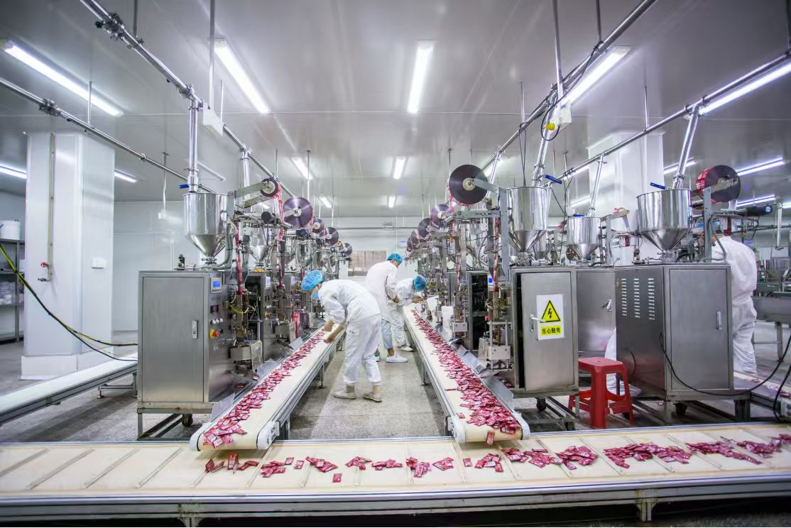

【客户背景】广州六合食品有限公司是华南区域深耕食品制造行业的本地企业之一，业务覆盖食品研发、生产加工与渠道分销，在粤港澳大湾区及周边市场拥有稳定渠道资源。公司在广州设有生产基地与运营总部，长期为连锁商超、便利店及团购渠道提供产品供应。
【业务范围与服务切入点】随着食品消费渠道多元化与终端价格带竞争加剧，公司同时面对线下渠道深化、线上电商布局、社区团购增量等多元场景，传统"以产定销"模式难以快速响应不同渠道的差异化需求。董事长亲自分管本次项目，把服务切入口放在"以客户为中心"的跨部门项目制运作上，希望在渠道、价格带、品类三个维度建立更敏捷的协同机制。
【服务方式】华认联国际项目组以"机制设计 + 流程重塑 + 能力赋能"三轮驱动模式推进。第一轮与高管团队共创，明确"新品经理负责制"与"渠道项目铁三角"两大核心机制，把原本散落在研发、市场、生产、电商等部门的协同节点整合到同一节奏上；第二轮协助梳理《新品上市流程》，把立项—打样—量产—上市打爆的关键里程碑重新对齐；第三轮开展"项目管理实战工作坊"，让参训小组带着真实在研新品完成端到端演练。
【价值呈现】项目运行后，公司在新品上市节奏、跨部门协同效率、电商渠道运营等关键环节都有了显性改善；董事长评价"华认联的项目不是再上一堆课，而是让组织真正跑起来"。项目结束后，双方就"海外渠道管理升级"做了进一步沟通，把本次沉淀的工具体系延伸至港澳与东南亚市场。
← 返回客户案例